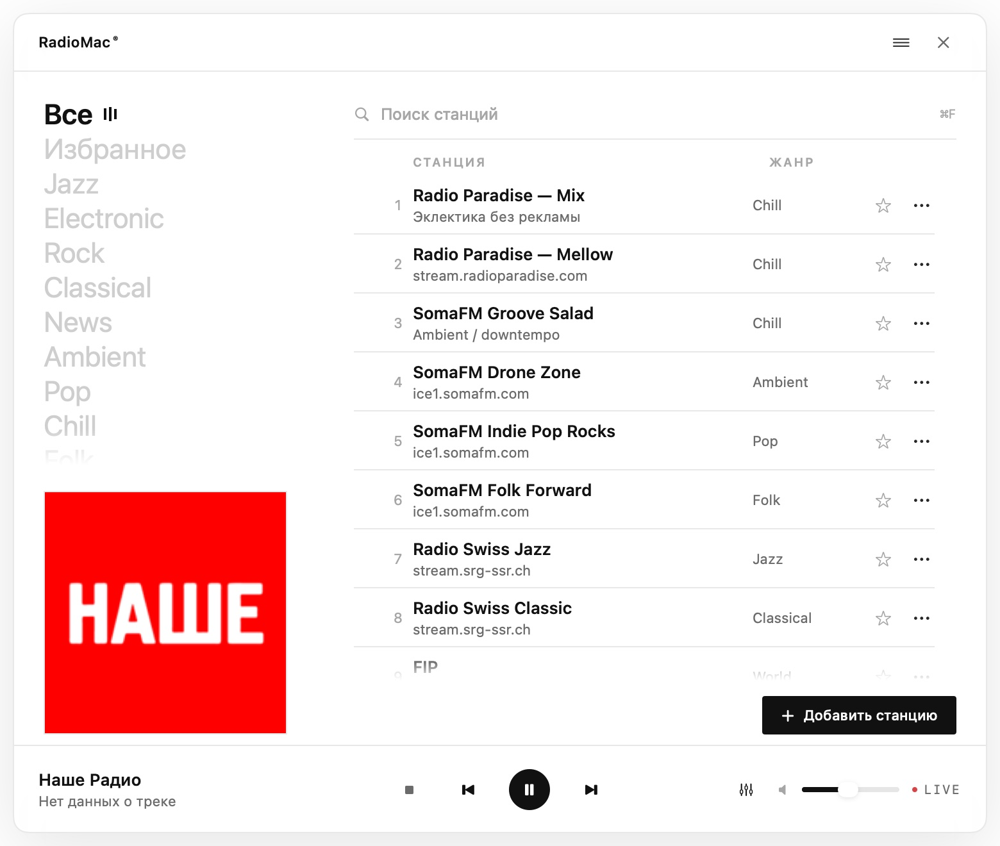
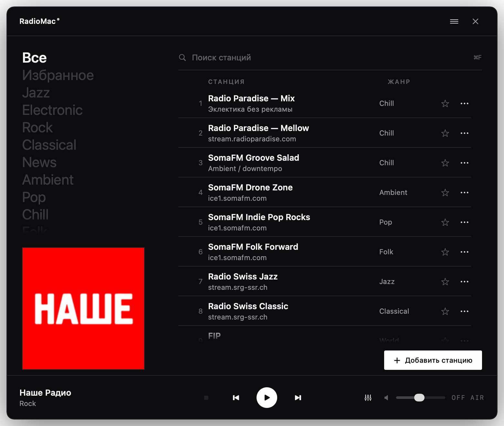
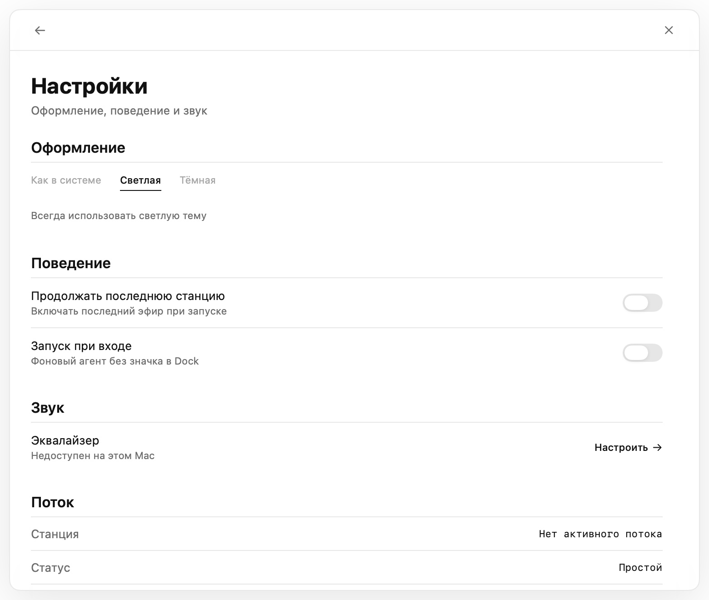
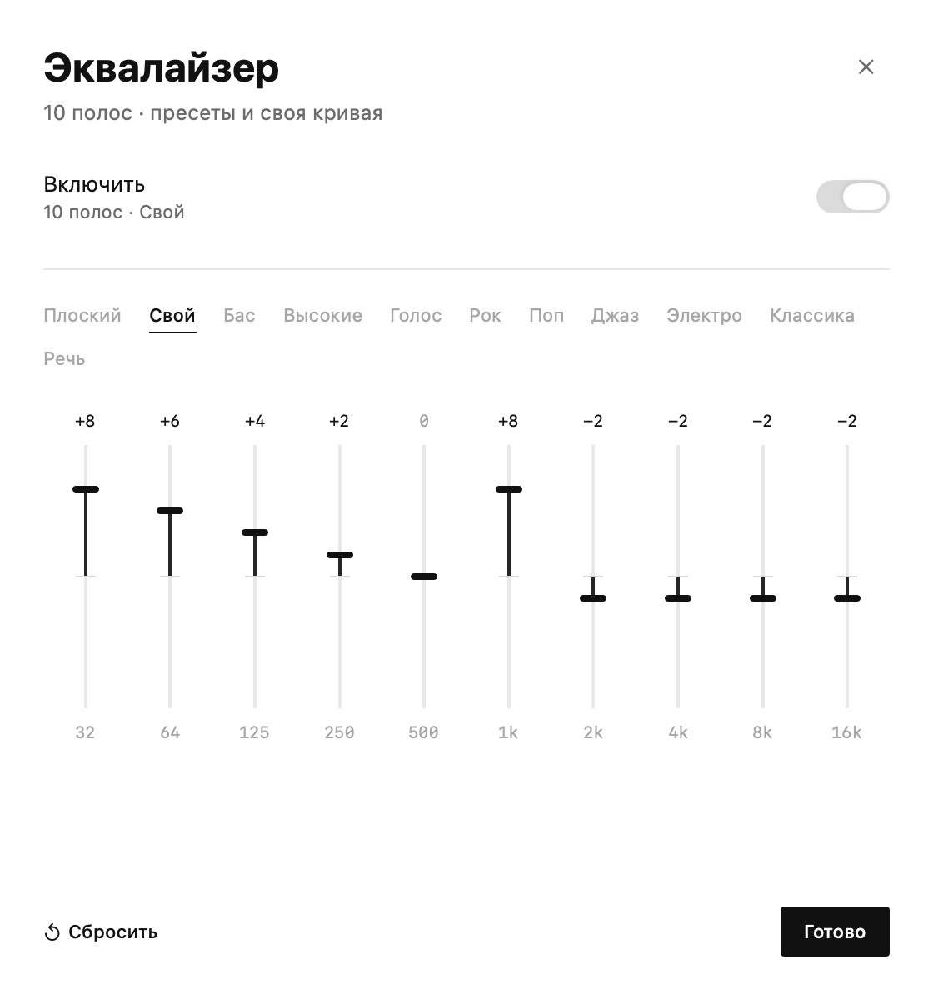
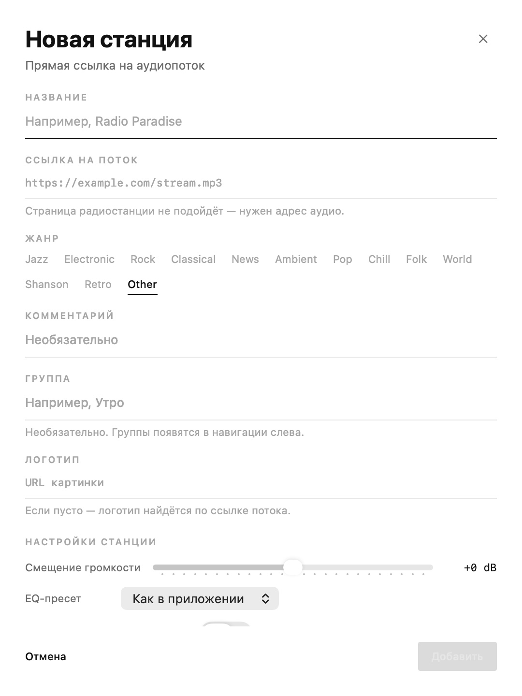
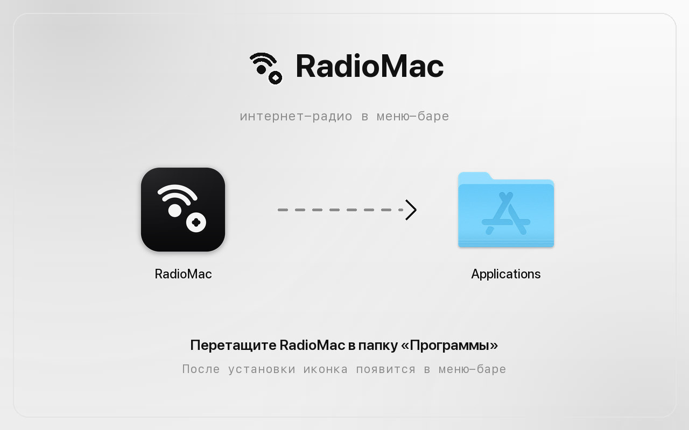

01
Навигация по жанрам
Крупный список жанров и избранного вместо мелких чипов. Активный жанр отмечается эквалайзер-индикатором — как в референсе.
macOS · меню-бар
47 станций, живые метаданные, эквалайзер и Now Playing в Control Center. Без иконки в Dock и без лишнего шума.
Сборка для macOS 14 и новее. Исходный код и все релизы — на GitHub.

Возможности
01
Крупный список жанров и избранного вместо мелких чипов. Активный жанр отмечается эквалайзер-индикатором — как в референсе.
02
Номер, название, подпись, жанр, избранное и меню действий. Поиск по всем полям, счётчик станций и сортировка по каталогу.
03
ICY-теги, Icecast, SomaFM и Radio Paradise. Обложка подтягивается из iTunes, а трек уходит в Control Center.
04
Пауза, стоп, предыдущая и следующая станция, громкость и LIVE. Если ничего не выбрано, Play включает первую станцию.
05
10 полос, пресеты и своя кривая. Настройка применяется ко всем станциям и сохраняется между запусками.
06
Светлая, тёмная или системная тема. Приложение работает в песочнице, не собирает телеметрию и не требует аккаунта.
Скриншоты




Клавиатура
| Клавиши | Действие |
|---|---|
| Esc | убрать фокус из поиска, иначе скрыть окно |
| Space | пауза / продолжить |
| ↑ ↓ | двигать выделение |
| Return | играть выделенную станцию |
| 1…9 | сразу включить станцию из списка |
| ⌘F | фокус в поиск |
| ⌘N | новая станция |
Установка
RadioMac 1.0.0.dmg — универсальная сборка для Apple Silicon и Intel.
Откройте DMG и перетащите RadioMac в папку Applications. Или установите через PKG.
Иконка появится в меню-баре, окно откроется по клику. Приложение не показывается в Dock и продолжает играть после закрытия окна.
Homebrew: brew trust fso13/tap, brew tap fso13/tap,
brew install --cask radiomac.
Требуется macOS 14 или новее. Если Gatekeeper блокирует сборку без нотарификации, выполните
xattr -dr com.apple.quarantine /Applications/RadioMac.app.
Проверить файлы можно по контрольным суммам,
состав сборки — по SBOM.

Безопасность
Приложение работает локально, в песочнице macOS, без аккаунтов и телеметрии. Сеть используется только для потоков станций, метаданных и логотипов.